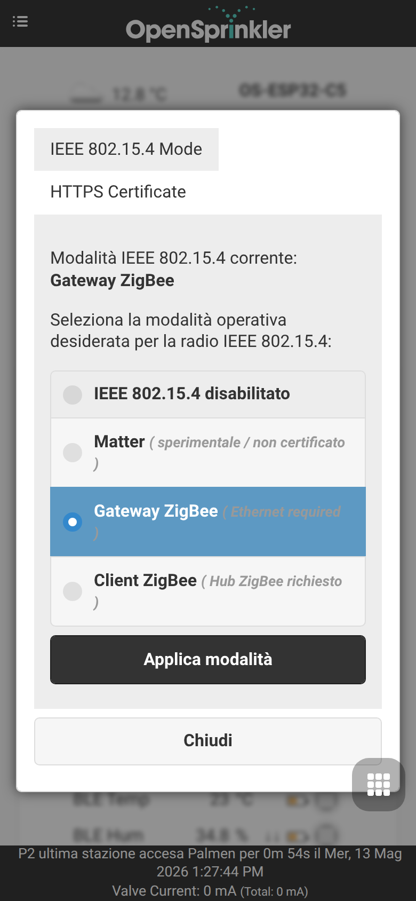
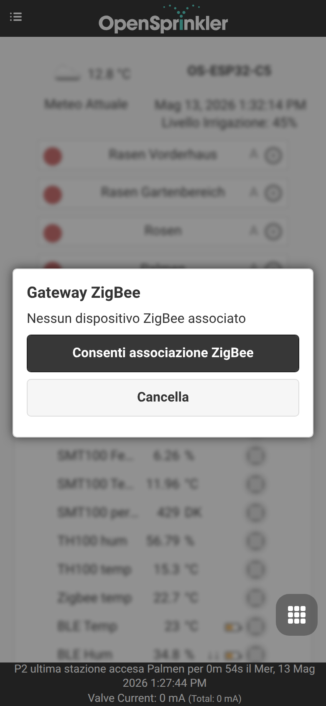
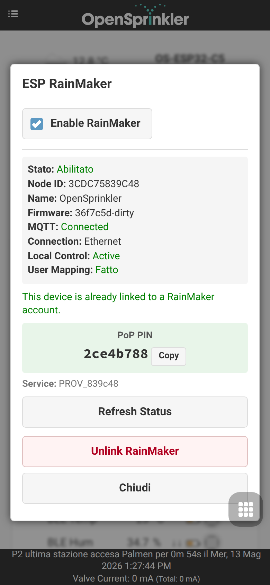
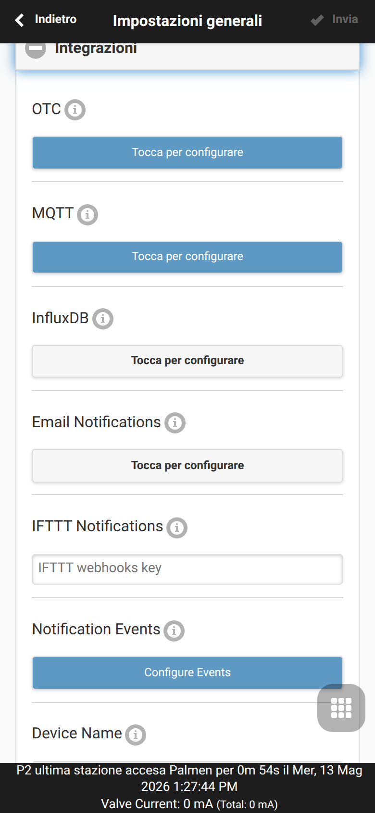
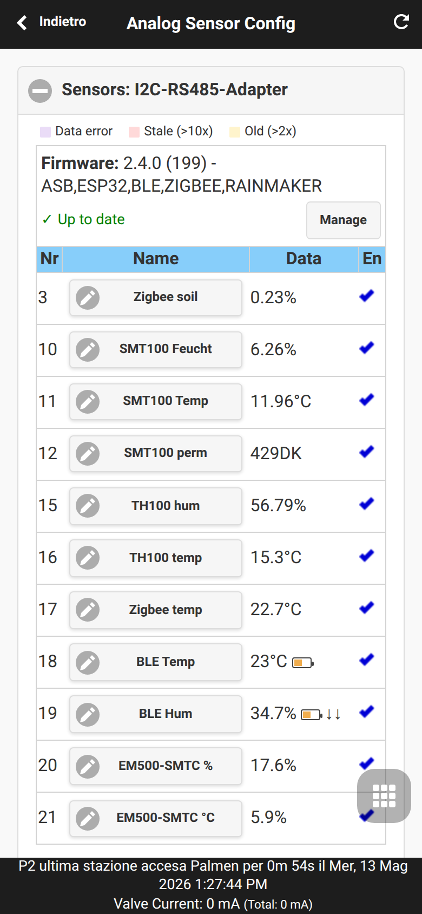
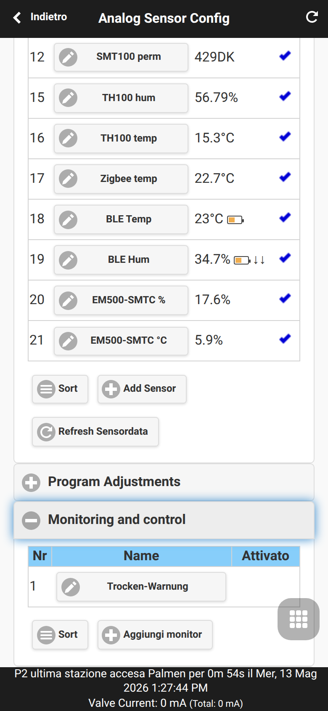
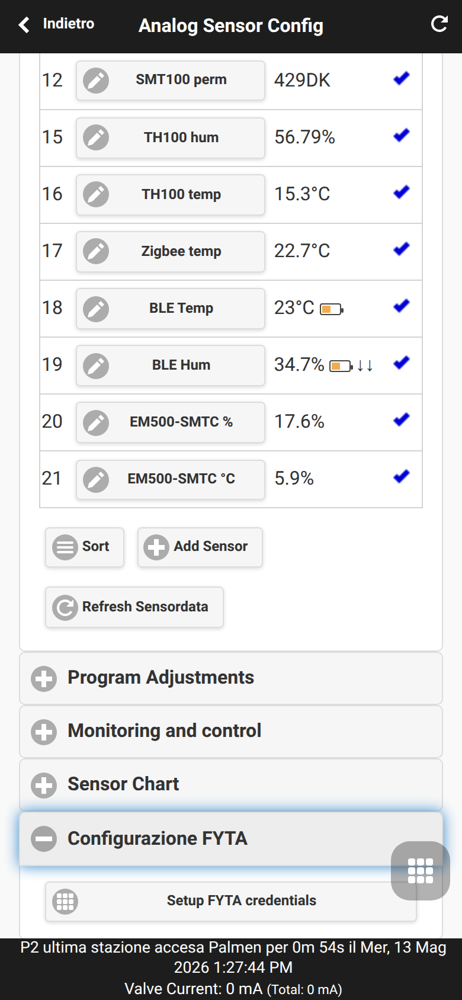
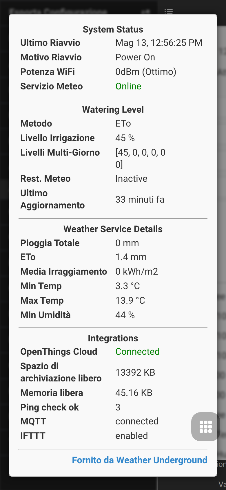

Estensione OpenSprinklerPro
OpenSprinklerPro indica l’insieme di funzioni estese per installazioni OpenSprinkler che richiedono integrazioni radio moderne, sensori avanzati, aggiornamenti online, accesso MCP/IA e monitoraggio più completo. Le funzioni di base restano quelle di OpenSprinkler: zone, programmi, regolazione meteo, log, accesso remoto e interfaccia web/app.
La linea firmware OpenSprinklerShop, incluso OpenSprinklerPro, usa una numerazione versione propria, indipendente dal firmware OpenSprinkler upstream. La versione firmware OpenSprinklerShop attuale è 2.4.0(199).
Questa pagina è autonoma e rimanda ai documenti locali solo dove servono dettagli aggiuntivi.
Panoramica
OpenSprinklerPro include in particolare:
- Aggiornamenti OTA online con controllo del manifesto, stato update e funzioni di backup.
- Funzioni radio ESP32-C5: gateway/client Zigbee e cambio modalità IEEE 802.15.4.
- Sensori BLE sui build ESP32 supportati e su OSPi con Bluetooth.
- Sensori FYTA Cloud per umidità e temperatura del suolo.
- Matter ed ESP RainMaker per smart home, cloud e app mobile su ESP32.
- Accesso MCP per assistenti IA, integrato nel firmware oppure tramite server Node.js esterno.
- Eventi di notifica per MQTT, e-mail, IFTTT e monitoraggio.
Disponibilità per piattaforma
OpenSprinklerPro non è identico su tutte le piattaforme. La disponibilità dipende da hardware e flag di compilazione.
| Funzione | ESP32-C5 Zigbee | ESP32-C5 Matter | ESP32 / non-C5 | ESP8266 | OSPi |
|---|---|---|---|---|---|
| Irrigazione, programmi, web UI, log | ✅ | ✅ | ✅ | ✅ | ✅ |
| OTA online via web UI | ✅ | ✅ | ✅ | ✅ | ❌ |
| Update tramite script/Git | ❌ | ❌ | ❌ | ❌ | ✅ |
| HTTPS / certificati ACME | ✅ | ✅ | dipende dal build ESP32 | ❌ | ❌ |
| Zigbee / IEEE 802.15.4 | ✅ | ❌ | ❌ | ❌ | ❌ |
| Sensori BLE | ✅ | ✅ | dipende dal build flag | ❌ | ✅ via Bluetooth Linux |
| Endpoint Matter | ❌ | ✅ | dipende dal build flag | ❌ | ❌ |
| ESP RainMaker | ✅ | ✅ | dipende da ESP32 | ❌ | ❌ |
| Sensori FYTA | ✅ HTTPS | ✅ HTTPS | ✅ HTTPS | ✅ solo HTTP | ✅ HTTPS |
MCP firmware integrato /mcp |
✅ ESP32 + USE_OTF |
✅ ESP32 + USE_OTF |
✅ ESP32 + USE_OTF |
❌ | ❌ |
| Server MCP Node.js esterno | ✅ | ✅ | ✅ | ✅ | ✅ |
Note:
- ESP32-C5 Zigbee ed ESP32-C5 Matter sono firmware separati. Zigbee e Matter non possono essere attivi contemporaneamente sulla stessa radio ESP32-C5.
- Gli endpoint Zigbee richiedono ESP32-C5 e
OS_ENABLE_ZIGBEE. - Gli endpoint BLE richiedono ESP32 e
OS_ENABLE_BLE; ESP8266 non supporta BLE. - OSPi dispone degli endpoint REST, sensori, FYTA e monitor comuni, ma non degli endpoint radio ESP32.
Vedi anche: addendum API e piattaforme, CHANGELOG.
Nomi funzioni UI e screenshot mobile
Le estensioni OpenSprinklerPro si usano dalla normale interfaccia web/app. Gli endpoint REST sono pensati soprattutto per automazione, diagnostica e integrazioni; il flusso utente parte da queste funzioni UI.
| Estensione | Funzione UI / percorso menu | Screenshot |
|---|---|---|
| Aggiornamento firmware online | Menu laterale → Online Update |  |
| Modalità radio ESP32-C5 / variante Matter | Menu laterale → Setup ESP32 Mode |  |
| Gateway Zigbee | Menu laterale → ZigBee Gateway |  |
| ESP RainMaker | Menu laterale → RainMaker |  |
| MQTT, e-mail, IFTTT ed eventi | Menu inferiore → Edit Options → Integrations |  |
| Configurazione sensori, FYTA e monitor | Menu inferiore → Analog Sensor Configuration |  |
| Regole monitor locali | Menu inferiore → Analog Sensor Configuration → Monitoring and Control |  |
| Configurazione FYTA | Menu inferiore → Analog Sensor Configuration → FYTA Setup |  |
| Diagnostica sistema | Menu laterale → System Diagnostics |  |
Aggiornamento OTA online
Il firmware Pro aggiunge la gestione degli aggiornamenti online in online_update.cpp / online_update.h. Il controller può controllare un manifesto, rilevare versioni disponibili, avviare un aggiornamento ed esporre tramite API lo stato di update o backup.
Funzione UI: aprire il menu laterale e scegliere Online Update. È il flusso consigliato per gli utenti perché riunisce controllo versione, backup, scelta firmware, progresso e ripristino dopo il riavvio.
Disponibilità:
- ESP32-C5 / ESP32 ed ESP8266: OTA disponibile tramite interfaccia web e upload manuale del firmware.
- ESP32-C5: doppie partizioni OTA per layout con possibilità di rollback.
- OSPi: aggiornamento via shell/Git/script di build, non tramite il flusso OTA web del firmware.
- Serve una connessione Internet funzionante e un manifesto raggiungibile.
Prima dell’update esportare la configurazione dal menu laterale. Su ESP32 ed ESP8266 il firmware fornisce anche /ub per un backup completo della configurazione; /sx è invece solo per la configurazione sensori.
Il flusso UI controlla gli update, crea un backup, scarica la variante firmware, esegue il flash, mostra il progresso e può ripristinare la configurazione dopo il riavvio. Chiamate avanzate possono sostituire URL e hash SHA-256 (zu, mu, fu, zs, ms) e scegliere la variante zigbee o matter con vt; servono per reinstallazione, downgrade o recovery. OSPi non usa questi endpoint OTA firmware.
Nota API per automazione e recovery: /uc controlla gli update, /uu avvia l’update, /us restituisce lo stato e /ub crea un backup completo.
Modalità ESP32 e gestione radio
Su ESP32-C5 l’interfaccia espone una pagina modalità per Matter, Zigbee Gateway e Zigbee Client. Il cambio aggiorna la configurazione IEEE 802.15.4 e richiede riavvio.
Funzione UI: aprire il menu laterale e scegliere Setup ESP32 Mode. Usare Apply Mode solo quando si vuole cambiare intenzionalmente ruolo firmware/radio.
- Zigbee Gateway gestisce localmente dispositivi Zigbee.
- Zigbee Client collega OpenSprinkler a un coordinatore Zigbee esistente.
- Matter richiede la variante firmware Matter; Matter e Zigbee non possono funzionare insieme sulla stessa radio ESP32-C5.
- Per installazioni Zigbee importanti è consigliato Ethernet.
Nota API per integrazioni avanzate: /ir legge la modalità radio, /iw la imposta, /zj gestisce il join client, /zg i dati gateway e /zs lo stato Zigbee.
Gateway e client Zigbee
Zigbee è una funzione del firmware ESP32-C5 Zigbee. Non è disponibile su ESP32-C5 Matter, ESP8266 o OSPi.
OpenSprinklerPro supporta due ruoli Zigbee.
Modalità gateway
In modalità gateway l’ESP32-C5 gestisce i dispositivi Zigbee locali:
- consentire il join dei dispositivi,
- elencare, interrogare e rimuovere dispositivi,
- arricchire i dati con produttore e modello quando disponibili,
- elaborare report Tuya e mapparli su attributi standard quando possibile.
Funzione UI: aprire il menu laterale e scegliere ZigBee Gateway. La pagina mostra i dispositivi associati e l’azione utente per consentire nuovi join.
Nota API per automazione e diagnostica:
/ire/iwper configurazione radio IEEE 802.15.4 e cambio modalità,/zg,/zd,/zo,/zcper gestione dispositivi gateway,/zsper stato Zigbee.
Modalità client
In modalità client OpenSprinkler si unisce a un coordinatore Zigbee esterno e pubblica dati locali come sensori, zone, programmi e stato del sensore pioggia. Gli endpoint ZCL coprono temperatura, umidità, flusso, sensori analogici, zone, programmi e sensori pioggia.
Per installazioni Zigbee importanti è consigliato Ethernet. La documentazione locale nota che Wi-Fi e Zigbee condividono la banda 2,4 GHz su ESP32-C5; durante le scansioni BLE la priorità Zigbee viene ridotta per limitare le interferenze.
Sensori BLE
Scansioni BLE e liste di sensori BLE sono disponibili sui build ESP32 con BLE abilitato, incluse le varianti ESP32-C5 Pro. OSPi può usare il Bluetooth del Raspberry Pi; ESP8266 non supporta BLE.
Funzioni BLE:
- lista dispositivi e controllo scansione (
/bd,/bs,/bccon ESP32 +OS_ENABLE_BLE), - informazioni come produttore e modello se esposte dal sensore,
- accesso thread-safe ai dispositivi scoperti,
- coesistenza con Zigbee su ESP32-C5.
Durante il BLE claiming di ESP RainMaker, l’inizializzazione dei sensori BLE viene rimandata fino al termine del provisioning.
Sensori FYTA
I sensori FYTA integrano umidità e temperatura del suolo tramite FYTA Cloud. OpenSprinkler non legge direttamente il sensore; interroga la FYTA Cloud API.
Disponibilità:
- ESP32 / ESP32-C5: HTTPS.
- ESP8266: solo HTTP per limiti TLS della piattaforma.
- OSPi: HTTPS.
Procedura tipica:
- Creare o copiare un token API FYTA da
web.fyta.de. - Nell’interfaccia OpenSprinkler aprire Settings → Sensor Settings → FYTA Setup e salvare token o credenziali.
- Aggiungere un sensore FYTA Moisture o FYTA Temperature.
- Scegliere una pianta FYTA associata a un sensore.
- Usare il valore in regolazioni programma o monitor.
È consigliato un intervallo di 15–60 minuti per evitare troppe chiamate API. Vedi sensori FYTA.
Matter ed ESP RainMaker
Matter
Matter è disponibile solo sui build ESP32 compilati con ENABLE_MATTER; nel set Pro corrisponde alla variante ESP32-C5 Matter. L’API JSON /jm espone stato commissioning, URL QR code e codice manuale. Matter non è disponibile su ESP8266 o OSPi.
Funzione UI: sulla variante firmware Matter aprire Setup Matter nel menu laterale. Sulla variante Zigbee l’UI mostra invece Setup ESP32 Mode, dove la variante Matter può essere selezionata prima del riavvio.
Per l’abbinamento con Apple Home, Google Home, Alexa o altro controller Matter, aprire la finestra di commissioning Matter nell’UI.
Nota API: /jm restituisce stato commissioning, URL QR code e codice manuale; /mm apre una finestra di commissioning e accetta t come timeout opzionale (default 300, massimo 900).
ESP RainMaker
ESP RainMaker è disponibile su ESP32 / ESP32-C5, non su ESP8266 o OSPi.
Funzione UI: aprire il menu laterale e scegliere RainMaker. La pagina mostra stato provisioning, PIN PoP, stato nodo/account e l’azione sicura di aggiornamento stato.
Il provisioning RainMaker supporta:
- BLE claiming alla prima configurazione senza certificati TLS,
- provisioning on-network quando i certificati esistono e il dispositivo deve essere collegato a un account utente,
- Ethernet come rete dati mentre BLE viene usato solo per il claiming,
- visualizzazione stato, inclusi provisioning, BLE claiming, controllo locale e PIN PoP.
Durante il BLE claiming, i sensori BLE attendono che RainMaker liberi le risorse BLE. La pagina stato mostra anche node ID, connessione MQTT, user mapping, local control, certificati, sensori differiti, uso Ethernet e dati provisioning. Vedi RainMaker provisioning.
Nota API per manutenzione: /rk restituisce lo stato RainMaker. reset_mapping=1 rimuove l’associazione utente; factory_reset=1 esegue reset RainMaker con riavvio. /ru scollega l’account.
Certificati HTTPS e ACME
I build ESP32 con HTTPS possono usare certificato interno, certificato/chiave PEM personalizzati o ACME/Let's Encrypt. L’UI mostra tipo, subject, issuer e validità.
/tglegge le informazioni certificato./tlcarica certificato PEM e chiave; serve riavvio./talegge configurazione e stato ACME./tcsalva la configurazione ACME e può richiedere un certificato./txelimina i dati ACME e torna al certificato interno.
Server MCP e integrazione IA
OpenSprinklerPro distingue due opzioni MCP.
Endpoint MCP integrato nel firmware /mcp
Il server MCP integrato funziona nei firmware ESP32 con USE_OTF abilitato:
POST http://<controller-ip>/mcp
Content-Type: application/json
Usa il trasporto MCP Streamable-HTTP con JSON-RPC 2.0 e accetta lo stesso hash MD5 della password usato dall’API REST: ?pw=, header X-OS-Password o bearer token. Espone un set compatto di strumenti principali come get_all, get_options, get_programs, get_station_status, manual_station_run, change_controller_variables e pause_queue.
Piattaforme: solo ESP32 / ESP32-C5 con USE_OTF; non ESP8266 e non OSPi.
Server MCP Node.js esterno
Il server esterno in tools/mcp-server/ gira fuori dal firmware e pubblica l’API REST come strumenti MCP via stdio. Funziona con controller ESP8266, ESP32 e OSPi e offre oltre 40 strumenti, inclusi sensori, monitor, Zigbee, BLE e risorse di sistema quando gli endpoint esistono sul controller target.
Vedi MCP server e API MCP firmware.
Eventi di notifica
OpenSprinklerPro può inviare eventi selezionati tramite MQTT, e-mail e IFTTT; InfluxDB può ricevere dati di misura. La configurazione è in Options → Integrations → Notification Events.
Funzione UI: aprire il menu inferiore, scegliere Edit Options, espandere Integrations e aprire Configure Events sotto il canale desiderato.
La documentazione locale elenca 17 eventi, tra cui:
- avvio programma,
- avvio e fine stazione,
- aggiornamento rain delay,
- aggiornamento sensore 1 / sensore 2,
- aggiornamento sensore di flusso,
- aggiornamento regolazione meteo,
- riavvio controller,
- alert flusso, assenza flusso e rottura tubo,
- errore sotto/sovracorrente,
- report mensile acqua,
- avvisi monitor basso, medio e alto.
Gli eventi legati al flusso richiedono un sensore di flusso configurato su SN1. Evitare di attivare tutti gli eventi su tutti i canali: troppe notifiche possono rallentare le risposte e disturbare cicli di irrigazione molto brevi.
Vedi eventi di notifica.
Monitor e alert locali
L’UI attuale include gestione monitor per valori sensore e alert locali. Un monitor controlla un valore configurato e genera avvisi di priorità bassa, media o alta quando le soglie vengono superate. Gli avvisi possono anche alimentare gli eventi di notifica.
Funzione UI: aprire il menu inferiore e scegliere Analog Sensor Configuration. Monitoring and Control gestisce le regole monitor; FYTA Setup salva credenziali FYTA e selezione piante.
Flusso tipico: configurare il sensore, creare un monitor con sorgente e soglie, scegliere priorità e verificare stato tramite campanella o diagnostica.
Nota API: /mc espone la configurazione monitor, /ml la lista e /mt i tipi supportati.
Diagnostica sistema e consumo acqua
Il menu laterale System Diagnostics mostra versione firmware/hardware, motivo riavvio, storage e memoria liberi, meteo, OTC e stato MQTT/InfluxDB/IFTTT.
Nota API: /jw fornisce consumo acqua mensile con pulse rate e record.
Note su UI e opzioni
OpenSprinklerPro usa la normale interfaccia web e app OpenSprinkler:
- Home con zone, meteo, percentuale irrigazione, ora dispositivo e footer di stato.
- Wizard iniziale per Wi-Fi/Ethernet/cloud e password.
- Menu laterale per gestione siti, export/import, cambio password, riavvio e diagnostica sistema.
- Menu inferiore per log, rain delay, pause queue, run-once, programmi e opzioni.
- Options → Weather & Sensors per regolazione meteo, sensori binari, sensore flusso e automazioni basate su sensori.
- Options → Integrations per OTC, MQTT, e-mail, IFTTT ed eventi di notifica.
- Impostazioni sensori per credenziali FYTA, regolazioni programma e monitor.
I tipi di stazioni virtuali includono RF, Remote IP/OTC, GPIO, HTTP e HTTPS. Si configurano nel tab avanzato degli attributi stazione. GPIO appare solo se esistono pin liberi; HTTPS non è disponibile su ESP8266 o OSPi.
Riferimenti utili: interfaccia, opzioni, home wiki.
Riferimenti API e documentazione
- CHANGELOG — note di rilascio delle funzioni Pro.
- Addendum API e piattaforme — note aggiornate su endpoint REST e piattaforme.
- API MCP firmware — dettagli del
/mcpintegrato. - Server MCP esterno — setup Node.js MCP ed elenco strumenti.
- RainMaker provisioning — BLE claiming e provisioning on-network.
- Sensori FYTA — configurazione e troubleshooting.
- Disponibilità piattaforme — panoramica hardware/funzioni.